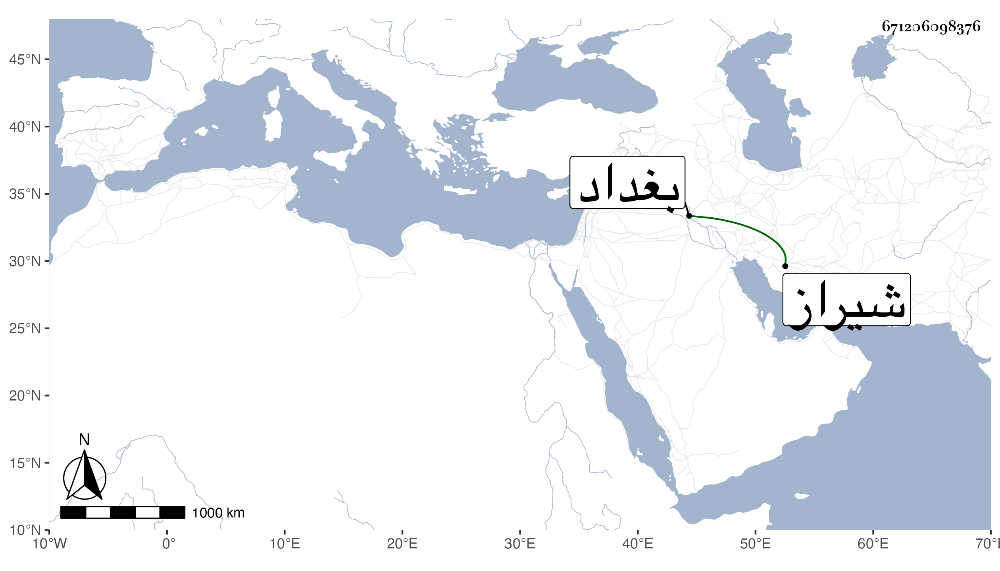

0902Sakhawi.DawLamic.ITO20230111-ara1.EIS1600.671206098376
Biography ID: 671206098376
8
بداق بن جهانشاه بن قرا يوسف ، ناب عن أبيه في شيراز ثم خالف عليه فقصده أبوه ففر لبغداد فتملكها وحاصره أبوه دون السنتين حتى ملكها وقتله مع خلق كثيرين جدا وغلت الاسعار بسبب الحصار حتى حكى لي بعض من كان في العسكر أن رأس الغنم بيع بما يوازي مائة دينار مصرية والرطل البغدادي من الثوم بنحو خمسة عشر دينارا قال وأكلت لحوم البغال والحمر الاهلية ونحوها وكان شجاعا كريما ظهر له كنز كبير قيل انه اثنا عشر خابية ففرقه على العسكر ولم ينظر إليه بل قال إن أصحابه لم ينتفعوا به فنحن أولى ، هذا مع شيعيته وفساد عقيدته وتجاهره بالمعاصي بحيث يأكل في رمضان نهارا على السماط مع كثيرين .
